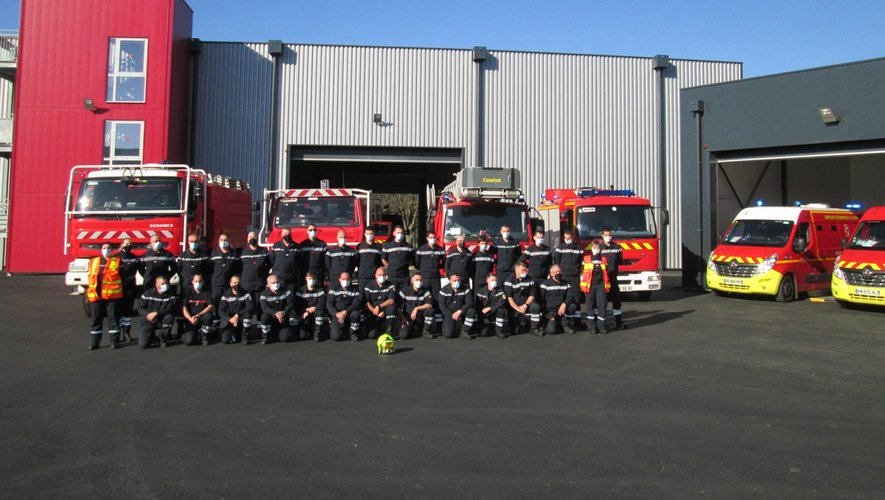
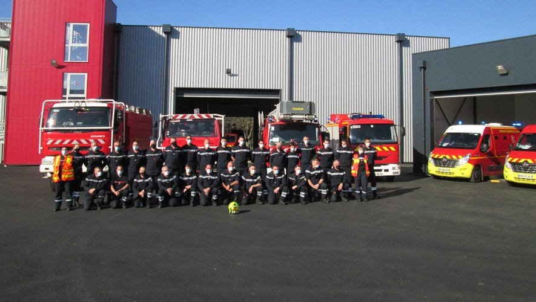

Vehicules
Ambulance (EMS)
Véhicule de secours et d’assistance aux victimes (VSAV)
Véhicule secours routier (VSR)
Grande échelle, ou échelle pivotante automatique (EPA)
Bras (Mât) Elévateur Articulé (BEA (MEA))
Fourgon pompe-tonne (FPT)
Camion-citerne feux de forêts (CCF)
Véhicule poste de commandement (VPC)
Bateau Léger de Sauvetage (BLS)
Bateau de Reconnaissance et de Sauvetage (BRS)
Camion Citerne Grande Capacité (CCGC)
Cellule Mobile d'Intervention Chimique (CMIC)
Fourgon Pompe Tonne / Camion Citerne Rural (FPT, CCR)
Moto Pompe remorquable (MPR)
Remorque Moto Ventilateur Grand Débit (RMVGD)
Véhicule Léger de Commandement / Véhicule Léger Officier Permanence de Secteur (VLC / VLOPS)
Véhicule d'Intervention en Milieux Périlleux (VIMP)
Véhicule d'Intervention sur Risques Technologiques (VIRT)
Véhicule de Liaison Hors-Route (VLHR)
Véhicule Poste de Commandement / Poste de Commandement Mobile (VPC / PCM)
Véhicule Porteur de Cellule (VPCE)
Véhicule de Plongeurs (VPL)
Véhicule de Secours Routier / Fourgon Pompe-Tonne Secours Routier (VSR / FPTSR)
Véhicule de Soutien Sanitaire (VSS)
Dragon (Helicoptère de la Sécurité Civile)